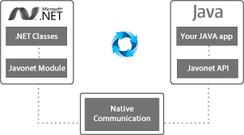

Make Connection Easyer...!
Makes Interperbility Easy
Java & .Net Interperbility Easy With this site.Communication Between Java and .Net is Possible when You are Visit this Site. Get detailed Sample that explain how to access specific technologies from the other side.

Java And .Net Communication With each other With the Native MSIL Code. View Video to quickly demonstrate how to use Java Class Into .NET.
Asp.NET Support Multipule Languages so It is Very Comfortable to Work With Asp.net.
It Has A Powerfull Database To Work With.
If You Working With Java and You want To use C# then You Do not want to Regernerate The code Into C# Code.
You Only Want to do is Make MSIL Code To Work With .Net Framwork.